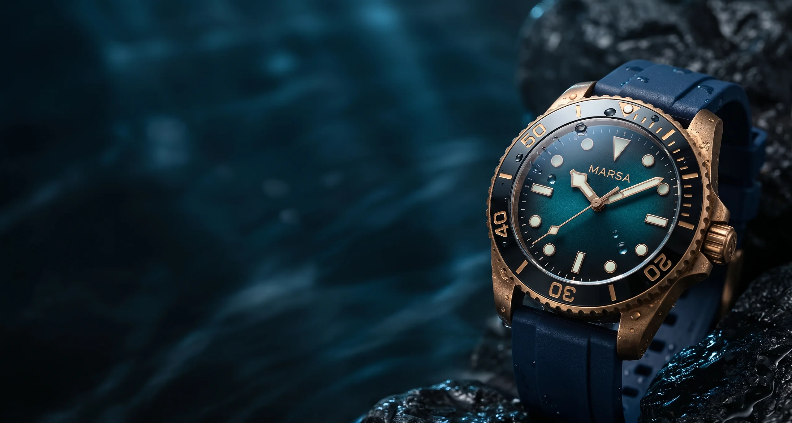
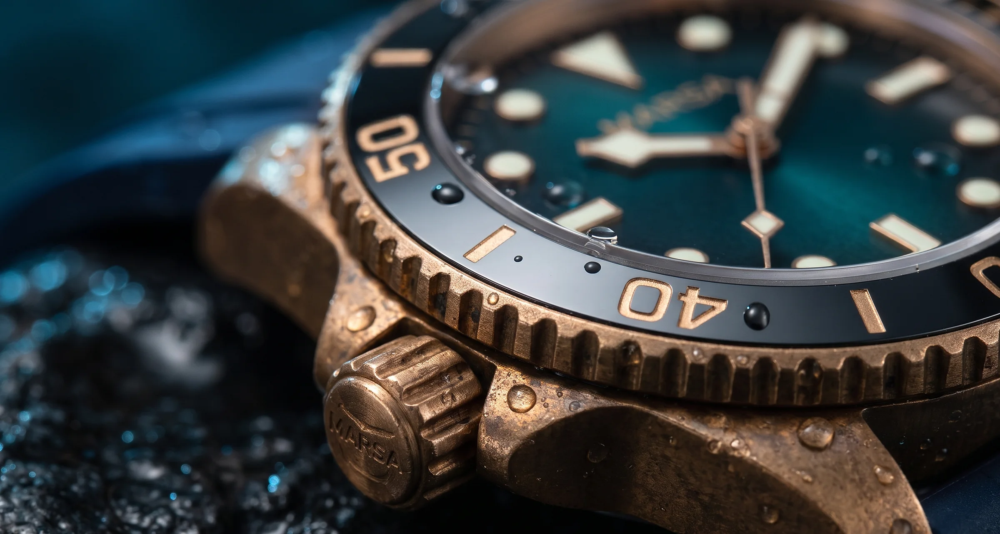
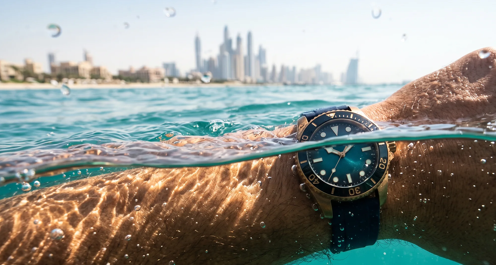

Built for the Gulf, below it.
A 42 mm bronze diver rated to 300 metres. Scroll down and the gauge on the right counts your dive.
Reserve yoursSee it turn
Every angle, wet.
CuSn8 bronzeTurns from rose to deep brown with every dive. No two age alike.
One-way bezelA knock can only shorten your dive time, never extend it.
Screw-down crownTwin gaskets. Sealed to 30 bar.
Swiss lumeGlows green after one minute in the sun.

0
bar of pressure, held shut.
The crown screws down onto two gaskets. Keep scrolling and watch the pressure climb.

Half in, half out.
Made for the swim from the boat to the reef and the walk back up the beach.
300
pieces. Numbered.
Reserve with a AED 500 deposit. The balance of AED 4,950 is due when your watch is ready for collection in Dubai Design District.
Reserve on WhatsApp